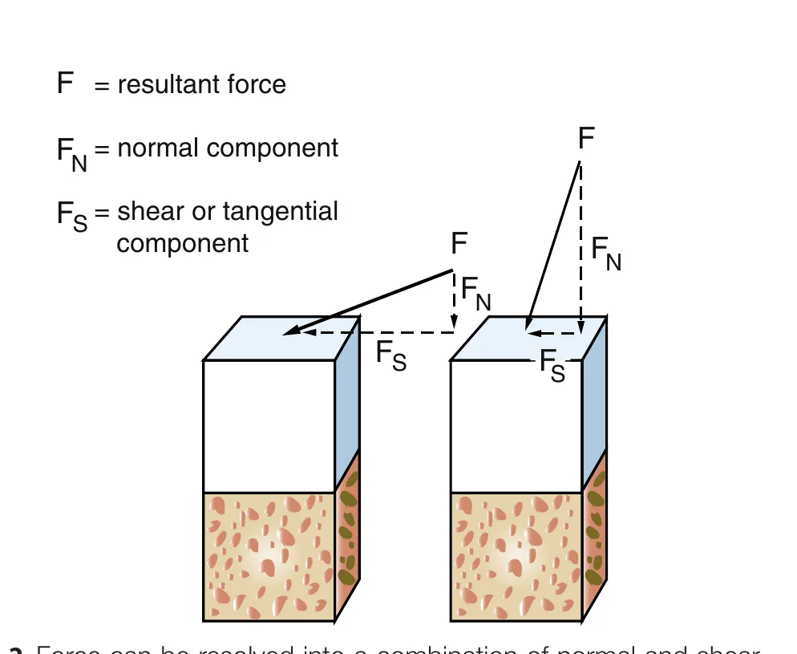
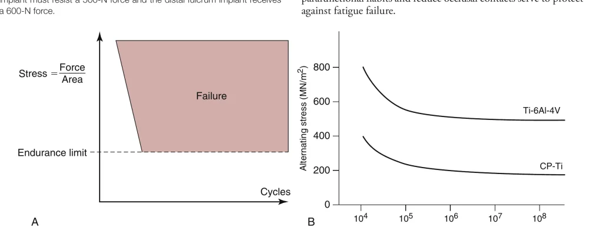

نسخه استخراجشده؛ ترجمه یا تأیید علمی انجام نشده است. وضعیت: captured
تا اینجا دربارهی نیرو حرف زدیم. حالا باید تفاوت نیرو و استرس را بدانی، چون آنچه بافت را میشکند استرس است نه نیرو.
تعریف این است: «بزرگی استرس به دو متغیر بستگی دارد: (۱) بزرگی نیرو و (۲) مساحت مقطعی که نیرو در آن پخش میشود.»
یعنی استرس = نیرو ÷ سطح. و همین معادلهی ساده، دو راهبرد کاملاً متفاوت میسازد: یا نیرو را کم کن، یا سطح را زیاد کن.
و اینجا نکتهی کلیدی این درس است:
«با این حال، سطح کاربردی که نیرو در آن پخش میشود، کاملاً از راه طرحریزی دقیق درمان کنترل میشود.»
«کاملاً کنترل میشود». بزرگی نیرو تا حدی به بیمار وابسته است (پارافانکشن، قدرت عضلانی، عادتها)، ولی سطح، تماماً محصول تصمیمهای توست.
و سطح کاربردی از چه چیزهایی ساخته میشود؟
«سطح کاربردی با شمار ایمپلنتها، عرض، طول، طراحی، و تراکم استخوان تعیین میشود، که مساحت تماس و استحکام استخوان را مشخص میکند.»
پنج متغیر: شمار، عرض، طول، طراحی، تراکم استخوان. چهار تای اول را انتخاب میکنی؛ پنجمی را باید بسنجی و طرح را با آن تطبیق دهی.
و نقش طراحی را دستکم نگیر: «ماکروژئومتری ایمپلنت (یعنی مقدار و جهتگیری سطح کاربردی در دسترس برای دفع بارها) اثر قوی بر ماهیت انتقال نیرو در رابط بافتـایمپلنت دارد.»
و نتیجهی کلی: «افزایش سطح کاربردی، بزرگی استرس مکانیکی تحمیلشده بر پروتز، ایمپلنت، و بافتهای زیستی را کاهش میدهد.»
به فهرست دقت کن — هر سه سود میبرند: پروتز، ایمپلنت، و بافت. سطح بیشتر، همهی حلقههای زنجیره را محافظت میکند.
و بحث سفتی (stiffness) — که ظریفتر است:
قاعده روشن است: «هرچه مدول الاستیسیتهی ایمپلنت به مدول بافتهای زیستی مجاور نزدیکتر باشد، احتمال حرکت نسبی در رابط بافتـایمپلنت کمتر است.»
و رابطهای که باید بدانی: «هرچه بزرگی استرس افزایش یابد، تفاوت نسبی سفتی میان استخوان و تیتانیوم افزایش مییابد» و برعکس، «هرچه بزرگی استرس کاهش یابد، تفاوت سفتی بسیار کمتر میشود.»
و کاربرد بالینیاش: «بنابراین تفاوت سفتی برای تیتانیوم تجاری خالص (یا آلیاژ آن) و استخوان متراکم D1 کمتر است در مقایسه با تیتانیوم و استخوان نرم D4.»
یعنی در استخوان نرم، دو مشکل همزمان داری: سطح تماس کمتر و ناهماهنگی سفتی بیشتر. و همین است که استخوان D4 را به سختترین شرایط پروتزی تبدیل میکند.

اجزای پروتز ایمپلنت معمولاً با یک ضربه نمیشکنند. آنها خسته میشوند.
چهار عامل در کارند:
«چهار عامل خستگی بهطور معناداری بر احتمال شکست خستگی در دندانپزشکی ایمپلنت اثر میگذارند: (۱) بیومتریال، (۲) ماکروژئومتری، (۳) بزرگی نیرو، و (۴) شمار چرخهها.»
عامل چهارم را جدی بگیر. «شمار چرخهها» یعنی زمان — و این توضیح میدهد چرا عوارض مکانیکی پروتز اغلب سالها پس از تحویل ظاهر میشوند، نه در ماه اول.
و یعنی یک طرح میتواند در سال اول بیعیب کار کند و در سال پنجم بشکند، بدون آنکه چیزی تغییر کرده باشد — جز شمار چرخهها.
و یافتهای که به درس اول برمیگردد:
«ایمپلنتها بهندرت، اگر اصلاً، شکست خستگی تحت بارهای فشاری محوری نشان میدهند.»
«بهندرت، اگر اصلاً». یعنی بار محوریِ فشاری تقریباً بیخطر است — و هر شکست خستگیای که میبینی، به احتمال زیاد از ممان آمده نه از بزرگی بار.
و شواهد بالینیاش: در یک گزارش، شکستهای خستگی ایمپلنتها بر اثر بارهای چرخهای باکولینگوالی (بارگذاری جانبی) در ناحیهای با استحکام خمشی ضعیف درون فیکسچر رخ داده بود. شکست بدنهی ایمپلنت در سه بیمار و شکست پیچ اباتمنت در کمتر از سه بیمار دیده شد.
به عبارت «بارگذاری جانبی» دقت کن — دقیقاً همان چیزی که ممان میسازد.
و همین است که کل این یونیت را جمع میکند: مسئله معمولاً «چقدر نیرو» نیست؛ «از کجا نیرو» است.
حد دوام (endurance limit) — مفهومی که باید بشناسی:
سازوکار این است: «اگر ایمپلنتی در معرض استرس بسیار بالا قرار گیرد، تنها چند چرخهی بارگذاری پیش از وقوع شکست تحمل میشود. در مقابل، شمار بینهایتی از چرخههای بارگذاری میتواند در سطوح استرس پایین حفظ شود. سطح استرسی که ایمپلنت زیر آن میتواند بهطور نامحدود بارگذاری شود، حد دوام آن نامیده میشود.»
این مفهوم امیدبخش است: اگر استرس را زیر حد دوام نگه داری، شمار چرخهها دیگر اهمیتی ندارد — یعنی گذشت زمان دیگر بهخودیخود خطری نمیسازد.
و تفاوت مواد: «آلیاژ تیتانیوم حد دوام بالاتری در مقایسه با تیتانیوم تجاری خالص نشان میدهد» — و بهطور مشخص «آلیاژ تیتانیوم در شرایط خستگی دو تا چهار برابر قویتر از تیتانیوم تجاری خالص است.»
و یک قاعدهی مهندسی که تأثیر ضخامت را نشان میدهد:
«شکست خستگی به توان چهارم تفاوت ضخامت مربوط است. مادهای که ضخامت دیوارهاش دو برابر باشد، تقریباً ۱۶ برابر قویتر است. حتی تغییرات کوچک در ضخامت میتواند به تفاوتهای معنادار بینجامد.»
دو برابر ضخامت = شانزده برابر استحکام. و این توضیح میدهد چرا قطر ایمپلنت و ضخامت فریمورک، متغیرهایی هستند که تأثیرشان بسیار بیشتر از آن است که بهنظر میرسد.
و نقطهی ضعف هم مشخص است: «اغلب، حلقهی ضعیف در طراحی بدنهی ایمپلنت تحت تأثیر تفاوت قطر داخلی و خارجی پیچ و فضای پیچ اباتمنت در ایمپلنت است.»
و چند عدد که مقیاس مسئله را نشان میدهند:
• «اوردنچرهای ایمپلنت نشان دادهاند که شکست یا عارضهی اتچمنت (۳۰ درصد) و شکست پروتز متحرک (۱۲ درصد) دارند.»
• «بروز شکست مادهی اکلوزال روی ایمپلنتها بیشتر است و ممکن است به نرخهایی تا ۳۰ درصد برسد.»
• و در مجموعهای از گزارشهای بالینی: «پانزده شکست دندان آکریلی یا کامپوزیتی روی ۱۰ تا ۲۰ پروتز ثابت متکی بر ایمپلنت در یک دورهی ۱ تا ۵ ساله رخ داد.»
سی درصد — این دیگر یک عارضهی حاشیهای نیست. و توجه کن که بروز آن روی ایمپلنتها بیشتر است تا روی دندان.
چرا؟ از تخصص جراحی میدانی: دندان لیگامان پریودنتال دارد و ایمپلنت ندارد. لیگامان ضربه را جذب میکند؛ ایمپلنت آن را مستقیماً به استخوان و به پروتز منتقل میکند.
و همین را با اشاره به سفتی نسبی اجزا هم میشود گفت: «ماهیت سفتی نسبی این اجزا در کل سیستم ایمپلنت تا حد زیادی پاسخ سیستم به بار ضربهای را کنترل میکند.»
و پیامدهای ناکامی در مدیریت استرس: دو مسیر شکست وجود دارد:
• «شکست ایمپلنت در دورهی ترمیم (healing) ممکن است از میکروموومنت ایمپلنت بهدلیل استرس بیشازحد ناشی شود.»
• «شکست ایمپلنت یا جزء ممکن است از شرایط خستگی رخ دهد.»
یکی زودهنگام و زیستی، دیگری دیرهنگام و مکانیکی — و هر دو از یک ریشه میآیند: استرس بیش از ظرفیت سیستم.
و نتیجهگیری عملی این بخش:
«سرانجام، شکست خستگی تا آنجا کاهش مییابد که شمار چرخههای بارگذاری کاهش یابد. بنابراین راهبردهای تهاجمی برای حذف عادتهای پارافانکشنال و کاهش تماسهای اکلوزالی، در برابر شکست خستگی محافظت میکنند.»
به واژهی «تهاجمی» دقت کن. دربارهی پارافانکشن نباید محافظهکار بود — چون پارافانکشن مستقیماً شمار چرخهها را بالا میبرد، و شمار چرخهها همان عاملی است که با گذشت زمان بیوقفه بالا میرود.
و همین یونیت را به یونیت بعدی وصل میکند: اگر پارافانکشن اینقدر تعیینکننده است، باید بتوانی آن را بسنجی و در طرح درمان کمّی کنی — و این دقیقاً کاری است که قضیهی درمان استرس انجام میدهد.
